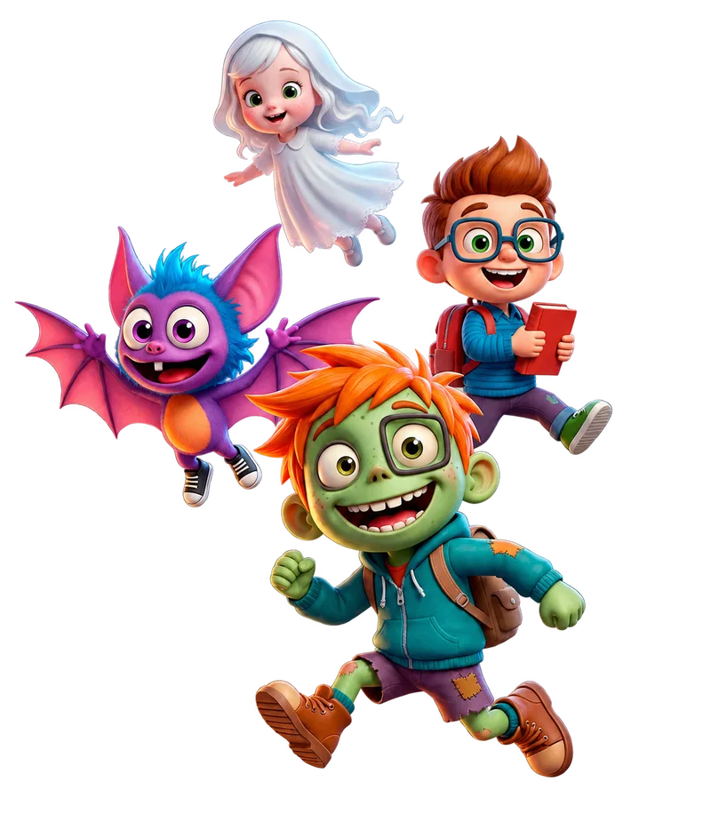

Algo valioso
para enseñar.
43 temas de esta propuesta ya existen en Currícula FlexFlix.
Texto final pendiente✦ CONTENIÑOS × FLEXFLIX
Un universo que ya enamora.
Cuatro nuevas maneras de descubrir el mundo.


01 / EL PUNTO DE PARTIDA
Pequeñas preguntas. Grandes descubrimientos.43 de los 72 temas ya existen
en Currícula FlexFlix.No partimos de cero. Partimos de una gran base.
Pensado para nivel inicial · 3 a 5 años como hipótesis de desarrollo
06 / EL BANCO DE IDEAS
Una pregunta puede empezar un gran viaje.Elegí un personaje. Encontrá una idea.
Descubrí todo lo que puede enseñar.
07 / UNA HISTORIA POR CONTAR
Del primer encuentro al próximo descubrimiento.Un primer vistazo al universo Conteniños.
Después, tres minutos para imaginar
lo que podemos crear juntos.
Observar cómo crece, a lo largo de varios días.
Juegos que atraviesan el tiempo y unen amigos.
Música, máscaras y una celebración en comunidad.
Reconocer alegría, tristeza y enojo.
08 / EL PRÓXIMO PASO, JUNTOS
Conteniños × FlexFlix43 temas de esta propuesta ya existen en Currícula FlexFlix.
Texto final pendienteCuatro personajes y ocho escenas ilustrativas para visualizar la propuesta.
Texto final pendienteFlexFlix: una plataforma educativa argentina con inteligencia artificial.
Texto final pendiente09 / EL PORTAL QUEDA ABIERTO
